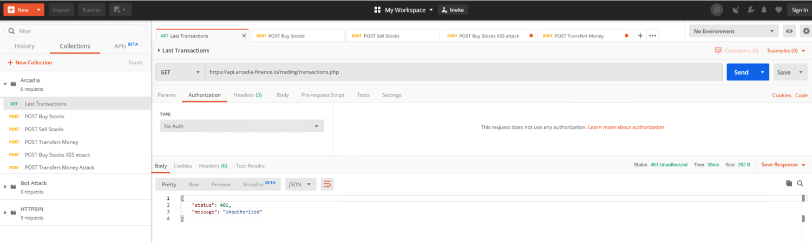
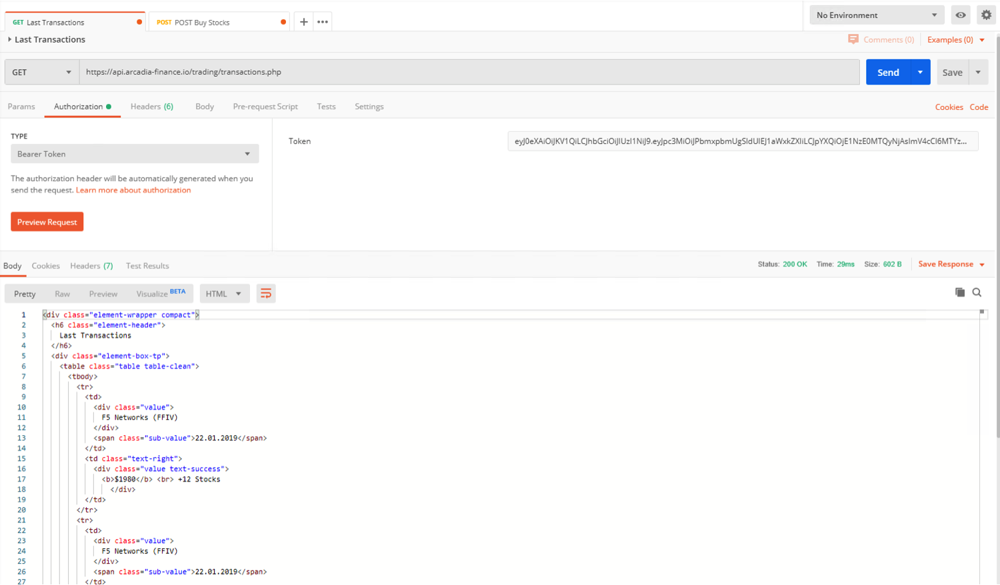
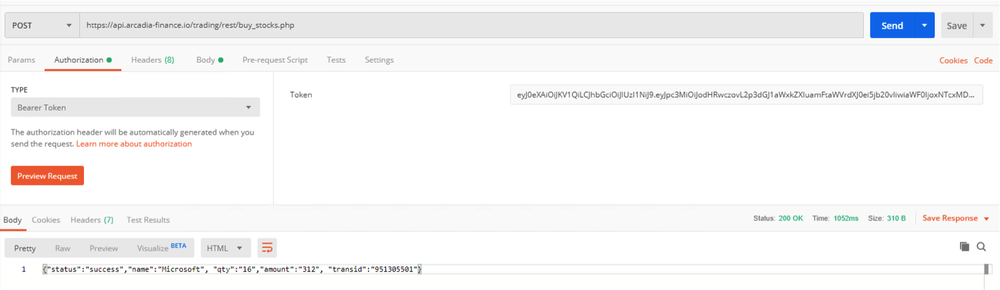
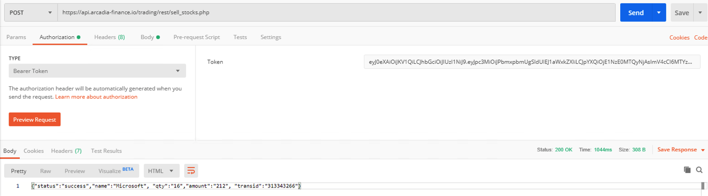
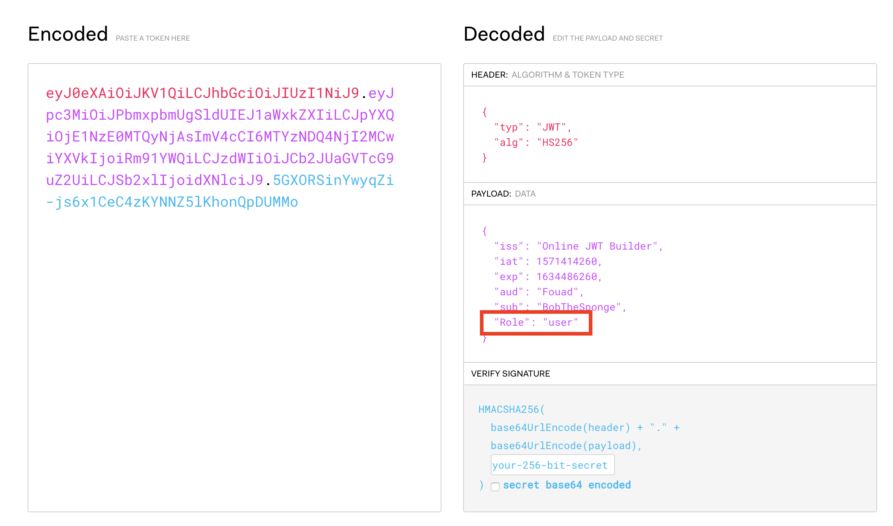

Lab 2.3 - Deploy JWT authorization in NGINX+¶
Deploy JWT Authorization for App2
1. Create Client Group in Nginx Controller. Click Client Groups, and then click “Create a Group”
{kind=link}
2. Put name Arcadia Users in “Name”. In the lab, we use JWT key file, so select JWT as “Type”. Then click “browse” and select the “jwt_key_file_API.jwk”, and click “Create”.
Warning
Be aware that if you use your local Laptop browser, you will browse locally your own laptop, so you will not find the file. So you can go to the WINDOWS Jumphost or use your laptop by downloading first the JWT file from this public place : https://iscfy20-lab-apim-nginx.s3-us-west-1.amazonaws.com/JWK_files/jwt_key_file_API.jwk or create the file directly.
{"keys":
[{
"k":"aWxvdmVuZ2lueA",
"kty":"oct"
}]
}
See also
The JWK file has to be created as above. The “k” is the secret key shared between the Autorization Server and the Resource Server. The key is ilovenginx encoded in base64. The format of the key is Octet.
{kind=link}
Add JWT policy to Arcadia API. Click “API Definitions”, and click edit icon for “prod API” environment; click “Add a Policy”.
Select “Authentication” in Policy Type, “Arcadia Users” in Client Group, “Bearer Token” in Credential Location jwt, and click “Save”
{kind=link}
{kind=link}
5. Click Publish and verify access via Postman
Open Arcadia Collection, and select “Last Transactions”, in request configuration, select NoAuth for “Authorization”, and click Send. You should see “401 Unauthorized” message
Select Bearer Token for “Authorization”, copy the “token user :” from file “JWT Token.txt” (located in Downloads folder in Windows Jumphost), paste it in “Token” (one previous token can already exist, overwrite it), and Click on Preview Request (this add a new Autorization header in the request), then click “Send”, you will see the successful transaction.

6. Go back to API Definition > Arcadia API > edit “Prod API” environment. Create an Access Policy by clicking the drop down icon for any resource, and select “Create new Policy”.
Note
Know bug. You can not delete the access policy, only create and edit access policy is allowed in this build.
{kind=link}
Note
This policy will check if the JWT token contains a claim name “Role” with capital “R”, and if the value equals to “admin”
{kind=link}
7. Click Publish, and wait for publishing to complete
8. Create 2 new resources (new API) in order to buy and sell stocks. Go back to API Definitions and edit Arcadia API Definition. Add /trading/rest/buy_stocks.php and /trading/rest/sell_stocks.php
Note
As these URLs are explicit, don’t use Prefix(*) but Exact(=)
{kind=link}
9. Then, add routes for /trading/rest/buy_stocks.php and /trading/rest/sell_stocks.php into the “prod API” environment. Assign Allow to /trading/transactions.php and /trading/rest/sell_stocks.php, assign allow_admin to /trading/rest/buy_stocks.php.
Create the policy as screenshot below. Only Buy_Stocks will request JWT claim “admin”.
{kind=link}
10. Click Publish, and wait for publishing to complete.
11. Verify access policy via Postman
Open Arcadia Collection, select “Buy Stocks”. In request configuration, select Bearer Token for “Authorization”, copy the user token from file “JWT Token.txt” (still located in Downloads folder), paste it in “Token”, click “Preview Request”, and click Send. You should see “403 Forbidden” message.
Copy the admin token from file “JWT Token.txt”, paste it in “Token”, click “Preview Request”, and click Send. You should see transaction successful message.
Select “Sell Stocks” in collection. In request configuration, select Bearer Token for “Authorization”, copy the user token from file “JWT Token.txt”, paste it in “Token”, click “Preview Request”, and click Send. You should see successful message.

{kind=link}
Note
Go back to the WebApp application in Chrome, refresh the page and you will see new transactions in the main app.
Check the JWT tokens in https://jwt.io in order to understand why user token can’t get an access.

See also
As you defined an Access Policy to control the claim Role, only value “admin” can access to Buy_stock. Users have a “user” Role value.